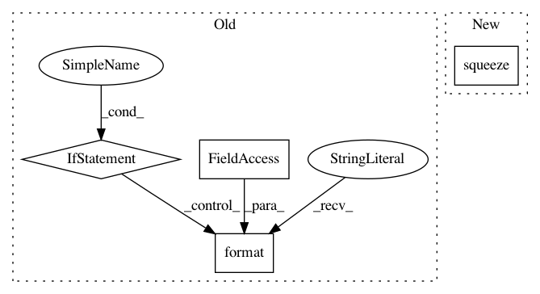

9bc2e60fd587389701c077f5bbff69250d6fb0b1,keras/callbacks.py,TensorBoard,_set_model,#TensorBoard#Any#,464
Before Change
for layer in layers:
if hasattr(layer, "W"):
tf.histogram_summary("{}_W".format(layer.name), layer.W)
if hasattr(layer, "b"):
tf.histogram_summary("{}_b".format(layer.name), layer.b)
if hasattr(layer, "output"):
tf.histogram_summary("{}_out".format(layer.name),
layer.output)
self.merged = tf.merge_all_summaries()
After Change
tf.histogram_summary(weight.name, weight)
if self.write_images:
w_img = tf.squeeze(weight)
shape = w_img.get_shape()
if len(shape) > 1 and shape[0] > shape[1]:
w_img = tf.transpose(w_img)
In pattern: SUPERPATTERN
Frequency: 3
Non-data size: 4
Instances
Project Name: keras-team/keras
Commit Name: 9bc2e60fd587389701c077f5bbff69250d6fb0b1
Time: 2016-09-07
Author: kuza55@gmail.com
File Name: keras/callbacks.py
Class Name: TensorBoard
Method Name: _set_model
Project Name: stellargraph/stellargraph
Commit Name: 145170ca9bbd89aa01d8a40841e3c039d3683af8
Time: 2019-06-03
Author: andrew.docherty@data61.csiro.au
File Name: stellargraph/layer/graph_attention.py
Class Name: GraphAttention
Method Name: call
Project Name: biolab/orange3
Commit Name: 959f696b68e68ab67ea44b49dd1070c217ee62b1
Time: 2016-09-13
Author: marko.toplak@gmail.com
File Name: Orange/preprocess/transformation.py
Class Name: Transformation
Method Name: __call__